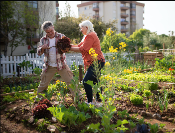
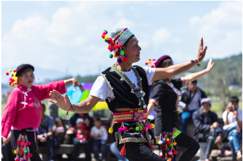

Nossas Propostas
Horta orgânica
A horta orgânica seria um local de encontro para a comunidade, um santuário de paz e beleza, onde todos são bem-vindos para se conectar com a terra e desfrutar dos benefícios da agricultura sustentável. Este espaço seria mais do que apenas uma horta; seria um ambiente educacional, inspirador e terapêutico.
Nossa missão nesse local estaria a promover a agricultura orgânica como um estilo de vida saudável e sustentável. Acreditamos que todos podem cultivar seu próprio alimento, não importa o tamanho de sua propriedade ou conhecimento prévio. Ofereceríamos workshops, aulas e recursos para ensinar as pessoas a plantar, cuidar e colher seus próprios produtos orgânicos.
O respeito pela natureza seria a base do nosso projeto. Utilizaríamos práticas orgânicas, como a compostagem, o cultivo rotativo e o manejo natural, para criar um solo fértil e saudável. Além disso, a diversidade de culturas na horta incentivaria a biodiversidade, promovendo um ambiente equilibrado e sustentável.
Teatro
O espaço seria um local dedicado à expressão artística, à criatividade e à comunicação por meio das artes do palco. Este teatro não seria apenas um espaço de entretenimento, mas também um centro de aprendizado, onde atores, diretores e amantes das artes poderiam desenvolver seu talento e paixão.
Também seria um local dedicado à expressão artística, à criatividade e à comunicação por meio das artes do palco. Este teatro não seria apenas um espaço de entretenimento, mas também um centro de aprendizado, onde atores, diretores e amantes das artes poderiam desenvolver seu talento e paixão.
Além de apresentações regulares, workshops, cursos de atuação e eventos comunitários para promover o crescimento artístico e cultural em nossa região.